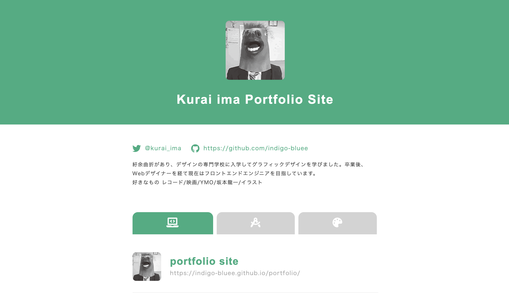

Now Loading...
Now Loading...
紆余曲折があり、デザインの専門学校に入学してグラフィックデザインを学びました。卒業後、Webデザイナーを経て現在はフロントエンドエンジニアを目指しています。
好きなもの レコード/映画/YMO/坂本龍一/イラスト
製作時期 2020.6-7 二週間
ポートフォリオサイトです。画面遷移を少なくするために1ページで完結するシンプルな構成にしました。 タブの部分は、アイコンにして直感的に何のカテゴリか分かりやすくしました。
製作時期 2020.6-7 二週間
架空のイタリア料理のWebサイトを作成しました。 Menu部分にアコーディオンを実装して画面遷移をせずにメニューを確認できるようにしました。 Visualは、PCの画像が並んだ状態からスライドショーにすることで、スクロールする手間を省いています。

製作時期 2016.2 5日
レトロな雰囲気が漂う架空のパン屋「グラーノ」を想定して、ロゴマークとロゴタイプを作成しました。 複数のアイデアを出しながら、最終的には顔があるパンという案にたどり着きました。
製作時期 2016.4 一週間
山本呉服店のサイトを個人的にデザインしました。元々のサイトは呉服店として伝わりにくかったため、 和テイストでデザインを一新しました。トップページから飛んだリンク先の各ページもイメージを崩さないように製作しました。
製作時期 2015-2016
数年前に描いたオリジナルのイラストです。